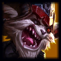

Kled rides his trusty steed, Skaarl, who takes damage for him. When Skaarl's health depletes, Kled dismounts.
While dismounted, Kled's abilities change and he deals less damage to champions. Kled can restore Skaarl's courage by fighting enemies. At maximum courage, Kled remounts with a portion of Skaarl's health.

Kled
the Cantankerous Cavalier
Noxus
Health:
340 (+70 per level)
Attack damage:
55 (+3 per level)
Attack speed:
0.625 (+3.5% per level)
Movement speed:
345
Health Regen:
6 (+0.75 per level)
Armor:
26 (+4 per level)
Magic Resist:
32.1 (+1.25 per level)
''A sane man would run . . . but I ain't the runnin' kind!''
A warrior as fearless as he is ornery, Kled is a popular folk hero in Noxus. Embodying the furious bravado of his nation, he is an icon beloved by the empire's soldiers, distrusted by its officers, and loathed by the nobility. Tall tales such as ''The Great Hussar,''
Read more
Abilities


Skins
Abilities
Skaarl, the Cowardly Lizard
Bear Trap on a Rope
Cost:
No Cost
Range:
800
Kled throws a bear trap that damages and hooks an enemy champion. If shackled for a short duration, the target takes additional physical damage and is yanked toward Kled.
When dismounted, this ability is replaced by Pocket Pistol, a ranged gun blast that knocks back Kled and restores courage.
Kled throws a bear trap that deals 50/100/150/200/250 (+60% bonus Attack Damage) physical damage and hooks onto the first enemy champion or large monster hit. Deals 150% damage to minions passed through.If Kled stays near a hooked enemy for 1.75 seconds, he deals 50/100/150/200/250 (+60% bonus Attack Damage) physical damage, yanks the enemy toward him, and slows the enemy by 40/45/50/55/60% for 1.5 seconds. Dismounted: Becomes Pocket Pistol, a ranged ability that restores courage.
Violent Tendencies
Cost:
No Cost
Range:
0
Kled gains massive attack speed for four attacks. The fourth attack deals more damage.
Passive: When Kled basic attacks, he frenzies, gaining 150% attack speed for four attacks or 4 seconds. Violent Tendencies then goes on cooldown.The fourth hit deals bonus physical damage equal to 20/30/40/50/60 plus 4/4.5/5/5.5/6% (+[0]%) of the target's maximum health (maximum 200 vs monsters).
Jousting
Cost:
No Cost
Range:
550
Kled dashes, dealing physical damage and gaining a short burst of speed. Kled can then reactivate this ability to dash back through his initial target, dealing the same damage.
Kled dashes, dealing 20/45/70/95/120 (+60% bonus Attack Damage) physical damage to enemies in his path. Cannot cross walls.If Jousting hits an enemy champion or large monster, Kled gains 50% movement speed for 1 second, and can reactivate this ability within 3 seconds to dash back through the same target, dealing the same damage.
Chaaaaaaaarge!!!!!
Cost:
No Cost
Range:
3500/4000/4500
Kled and Skaarl charge to a location, leaving a speed-granting trail behind them and gaining a shield. Skaarl locks onto and rams the first enemy champion encountered.
Kled charges toward a location, leaving a trail that grants allies increasing movement speed. While charging, Kled gains a shield that increases over time to a maximum of 200/300/400 (+300% bonus Attack Damage) and lasts for 2 seconds after the charge ends.Skaarl rams the first enemy champion encountered, dealing up to 12/15/18% (+[0]%) of the target's maximum health as physical damage based on distance traveled.
''A sane man would run . . . but I ain't the runnin' kind!''
A warrior as fearless as he is ornery, Kled is a popular folk hero in Noxus. Embodying the furious bravado of his nation, he is an icon beloved by the empire's soldiers, distrusted by its officers, and loathed by the nobility. Tall tales such as ''The Great Hussar,'' ''The High General Marshal Sergeant,'' and ''The Mountain Admiral'' trace back to the founding of the empire. Many soldiers claim Kled has fought in every campaign the legions have waged, has ''acquired'' every military title, and has never once backed down from a fight. Though the veracity of the details is often questionable, one part of his legend is undeniable: Charging into battle on his un-trusty steed, Skaarl, Kled fights to protect what's his . . . and to take whatever he can get.
A warrior as fearless as he is ornery, Kled is a popular folk hero in Noxus. Embodying the furious bravado of his nation, he is an icon beloved by the empire's soldiers, distrusted by its officers, and loathed by the nobility. Tall tales such as ''The Great Hussar,'' ''The High General Marshal Sergeant,'' and ''The Mountain Admiral'' trace back to the founding of the empire. Many soldiers claim Kled has fought in every campaign the legions have waged, has ''acquired'' every military title, and has never once backed down from a fight. Though the veracity of the details is often questionable, one part of his legend is undeniable: Charging into battle on his un-trusty steed, Skaarl, Kled fights to protect what's his . . . and to take whatever he can get.
Friends
-
Skaarl
Rivals
-
 Darius
Darius -
 Draven
Draven -
 Ekko
Ekko